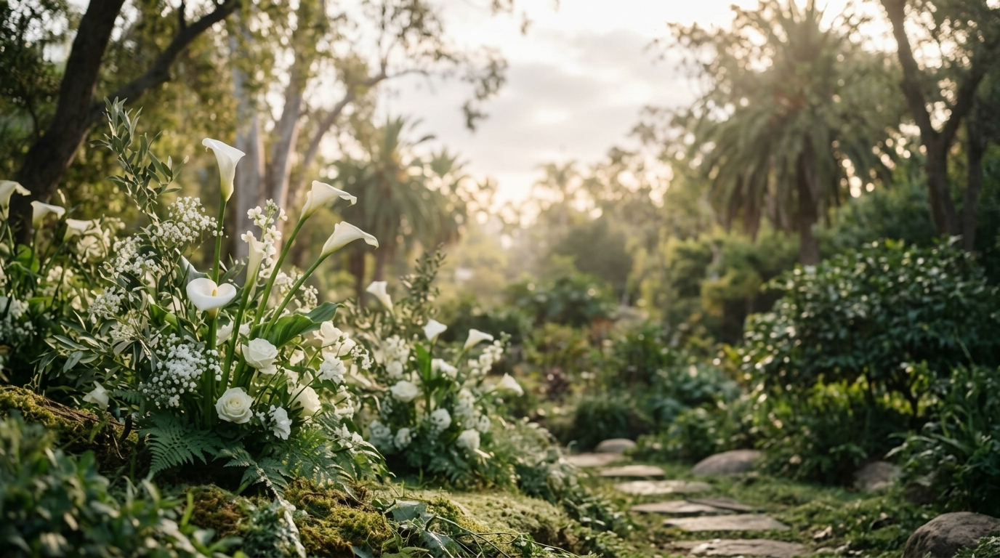
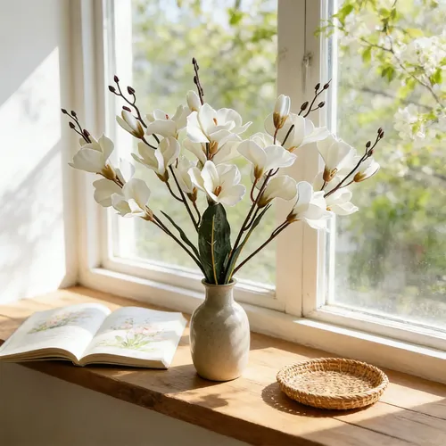

Santa Maria
Respeito à história. Acolhimento à família.
Conheça os planos
Escolha o cuidado que faz sentido para sua família.
Conte com acolhimento e clareza em cada etapa.

Bronze
O cuidado essencial
Padrão / Simples (madeira simples, sem entalhes, acabamento fosco)
Capela Pública / Comunitária (com ornamentação floral básica com flores da estação)
Apenas Municipal (cobertura local ou raio curto de 50 km a 100 km)
Não inclusa (opcional)
Prata
Mais acolhimento para sua família
Intermediária / Trabalhada (madeira tratada, verniz brilhante e alças varão)
Sala Privativa (capela particular ou cemitério parceiro com ornamentação de médio porte)
Raio de 300 a 500 km (cobertura estadual ou regional)
Opção Simples (ou sepultamento)
Ouro
Cuidado em cada detalhe
Luxo / Madeira Nobre (entalhes trabalhados, estofamento em cetim e acabamento superior)
Sala VIP com Lounge (climatizada, com lounge de descanso e ornamentação nobre)
Cobertura Nacional (terrestre e/ou aérea sem limite de quilometragem)
Incluso / Urna Cinerária Nobre (ou jazigo privativo)
Três opções de cuidado, com informações claras para uma escolha tranquila.

Ao seu lado,
quando mais importa.
Acolhimento para você e sua família.
Como você prefere
nos contatar?
Escolha o canal mais confortável para você.
Nossa equipe está pronta para acolher e orientar.
RESPEITO À HISTÓRIA. ACOLHIMENTO À FAMÍLIA.
Quem somos
Na Funerária Santa Maria, compreendemos que a despedida de um ente querido é um dos momentos mais delicados da vida humana. Por isso, nossa missão vai além da prestação de serviços: oferecemos amparo humanizado, empatia e condução respeitosa para proporcionar paz e tranquilidade às famílias.
Com anos de dedicação e compromisso ético, cuidamos de cada detalhe do processo com absoluta transparência. Nossa equipe está preparada para atuar 24 horas por dia, oferecendo suporte integral e orientações claras, sempre respeitando os desejos, as crenças e a memória de quem partiu.
Cuidar é estar presente.
Nossos Valores
Humanização e Acolhimento
Priorizar a empatia, a escuta sensível e o carinho no atendimento, oferecendo amparo emocional e suporte humano além da execução dos serviços técnicos.
Respeito e Dignidade
Tratar a trajetória de cada indivíduo com profunda reverência, preservando a honra da memória e o adeus de quem fica. Respeito e admiração pelo indivíduo independente da sua crença, religiões, tradições e filosofias de vida.
Excelência e Cuidado
Garantir alto padrão de qualidade, dedicação e excelência na infraestrutura, na preparação, no traslado e na condução das cerimônias de despedida.
PRESENÇA E ACOLHIMENTO
Unidades
Um ambiente de serenidade e acolhimento.
Uniadade: Rio Grande do Sul
Rua dos Ciprestes, 845 – Bairro Menino Deus, Porto Alegre – RS
Unidade: Santa Catarina
Avenida das Araucárias, 1420 – Bairro América, Joinville – SC
Unidade: Paraná
Rua Padre Serafim, 612 – Bairro Água Verde, Curitiba – PR